CULTURE
Игровой режим и мировоззрение
Мировоззрение
Игроки играют за "странника во времени" и исследуют мультивселенную, которая погрузилась в хаос из-за коллапса временного потока.Каждый уровень представляет собой независимый "фрагмент времени”, который может быть древним полем битвы, городом будущего или разрушающейся сингулярностью.
Основной режим
Эхо фрагментов
"Эхо фрагментов” - Приключенческий режим Roguelite (основной PVE)
- Игроки попадают в случайно сгенерированные временные фрагменты, и каждое приключение - это новое начало.
- Побеждайте врагов на уровне, открывайте сундуки с сокровищами, чтобы получить временные модули навыков, бонусы к атрибутам и постоянно разблокируемое “Наследие временных рядов” (пассивный талант).
- Death потеряет все временные выгоды от этого приключения, но "Наследие временных рядов" и разблокированные постоянные модули навыков будут сохранены, чтобы игроки могли продолжать расти.
Временные сбои
"Временные сбои” - Режим испытания
Исправлены высокие уровни сложности, включая сложные прыжки с платформы, экологические головоломки и экстремальные сражения.Проверьте уровень владения игроком основной системой.Вы можете получить редкие внешности и титулы, пройдя таможенное оформление.
Зеркальная дуэль
"Зеркальная дуэль" - Асимметричный режим PVP (опционально)
режим 1 на 1 или 2 на 2.Одна сторона играет за ”хронохода“, а другая сторона может играть за ”хронохода“ или выбрать управление ”пространственно-временным искажением" (могущественным монстром с особыми способностями) на уровне, чтобы сражаться в динамично меняющемся месте.
Презентацияя
Карта: "Фрагменты времени”
Группа А: Фрагменты древних времен
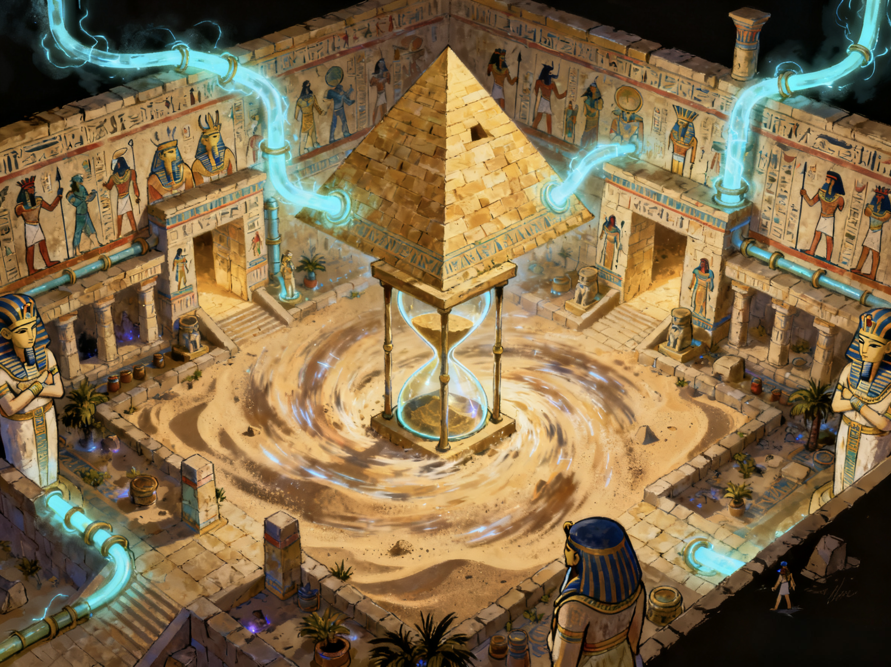
Внутри вечной пирамиды
- Механизм: Каждые 90 секунд внутренняя структура будет перестраиваться (перемещение стены, сброс ловушки).
- Специальное: центральная зона песочных часов, скорость течения времени ускоряется на 50%.
- Видение: древнеегипетские фрески, переплетенные со светящимися энергетическими трубками.
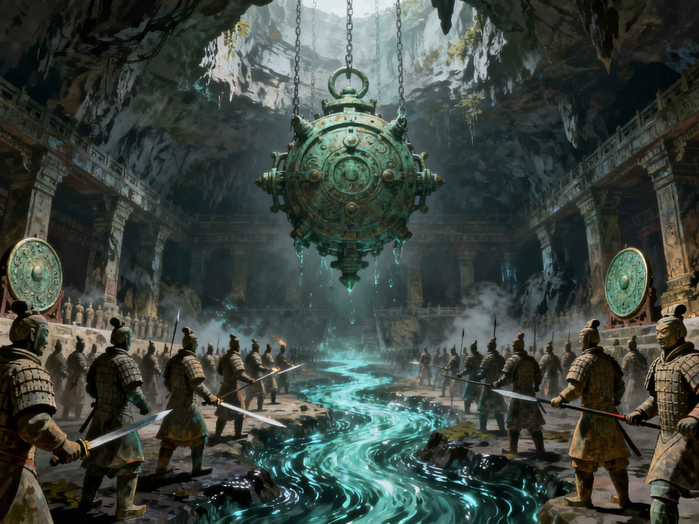
Недостроенная территория мавзолея Шихуан
- Механизм: Массив терракотовой армии будет регулярно “активироваться" для нападения на незваных гостей.
- Специальное: Специальные бронзовые зеркала могут отражать временные навыки, нанося двойной урон.
- Видение: огромный подземный дворец, подвешенные бронзовые органы и поток жидкой воды по млечному пути.
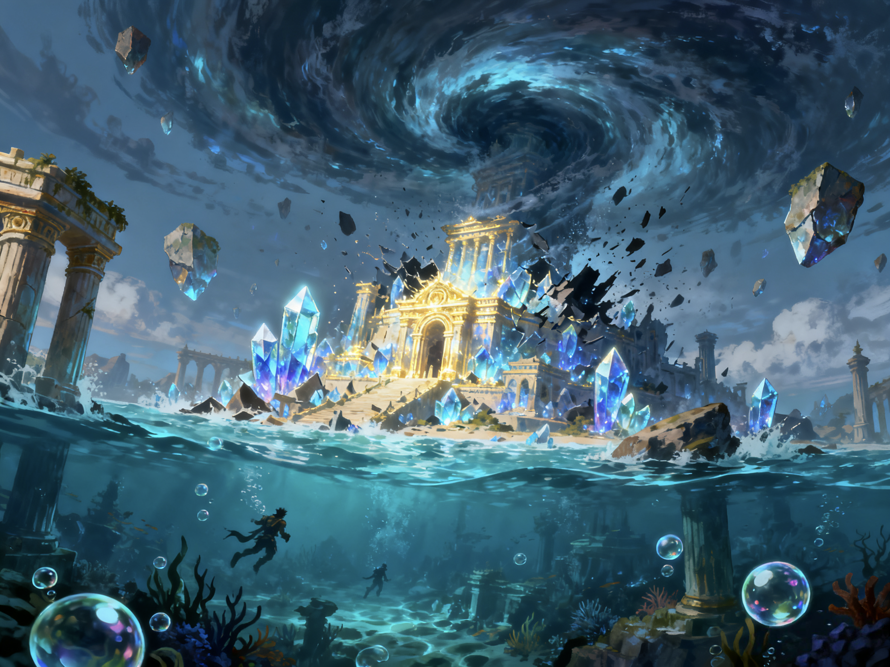
В тот момент, когда затонула Атлантида
- Механизм: вся карта медленно погружается в морскую воду (ограничение по времени).
- Особенность: в области пузырьков вы можете нормально дышать и бороться.
- Видение: Великолепный хрустальный город, который рушится, над огромным водоворотом.
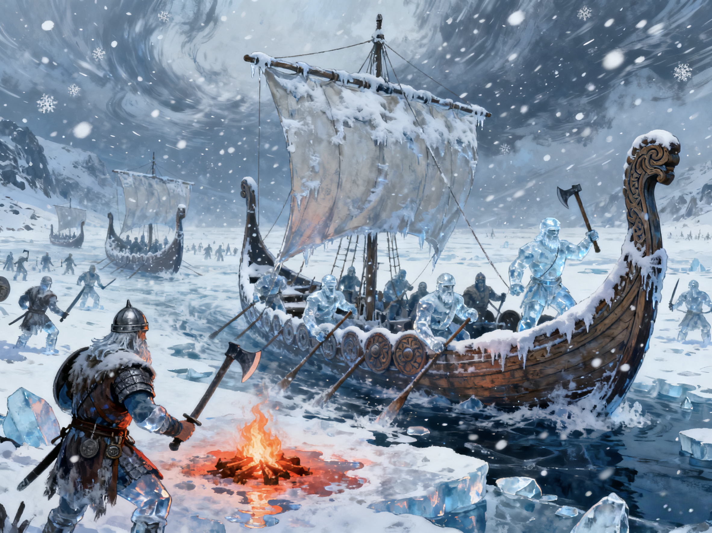
Замороженное поле битвы эпохи викингов
- Механизм: в очень холодных зонах скорость восстановления энергии будет медленно снижаться.
- Специальное: Разжигание костра может создать безопасную зону и принести прибыль.
- Видение: Ледяные скульптуры баркасов и воинов, навсегда застывшие в снежной буре.
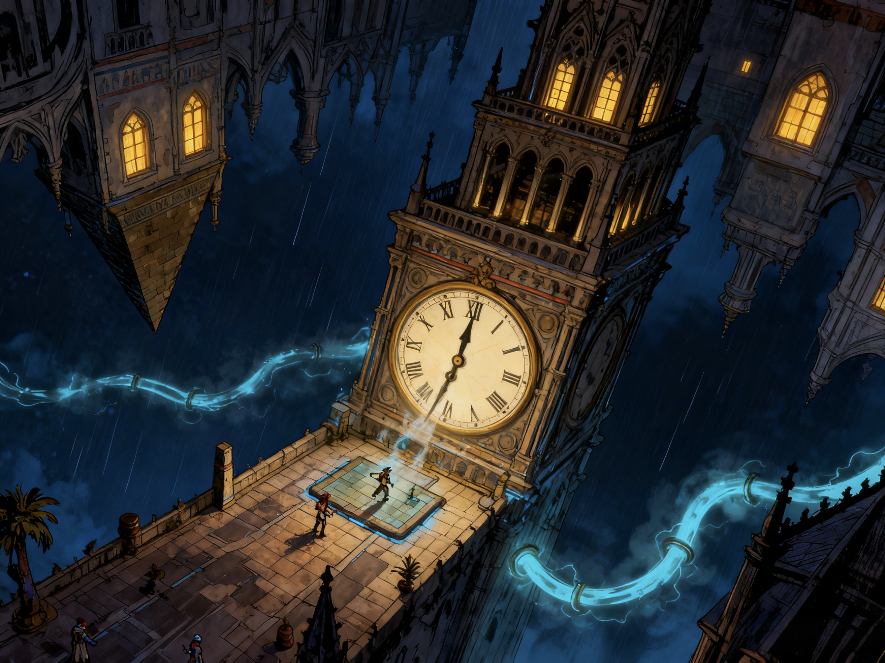
Вершина колокольни в стиле Ренессанс
- Механизм: огромные стрелки часов служат подвижными платформами и опасными зонами.
- Специальное: В течение всего времени (в игре) колокол будет сотрясать противника, находящегося на возвышении.
- Видение: перевернутый готический город, дождливая ночь с теплыми желтыми огнями в окнах.
Группа В: Фрагменты нового времени
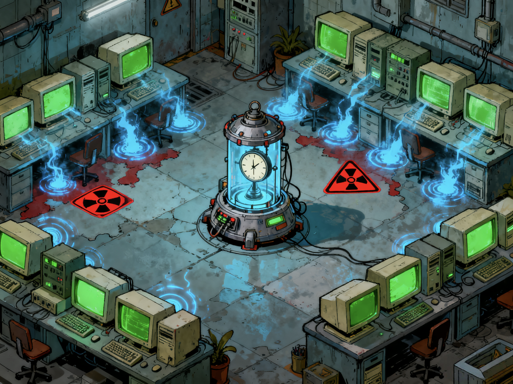
Секретный институт времен холодной войны
- Механизм: Радиоактивные области со временем накладывают эффект “генных мутаций”.
- Специальное: Экспериментальная машина времени может быть активирована для получения случайных эффектов.
- Зрение: зеленый электронно-лучевой монитор, старомодный компьютер и утечка энергии времени.
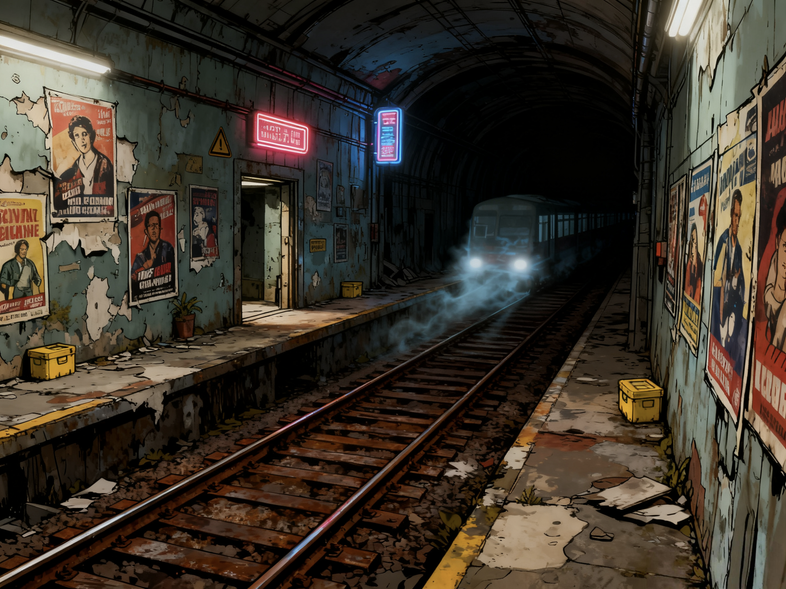
Заброшенная станция метро в 20 веке
- Механизм: Поезд-призрак проходит регулярно, нанося урон и обеспечивая кратковременную неуязвимость.
- Специальное предложение: скрытые ярлыки и пункты снабжения за стеной с плакатами.
- Видение: облупившаяся реклама, ржавые железнодорожные пути и мигающие неоновые вывески.
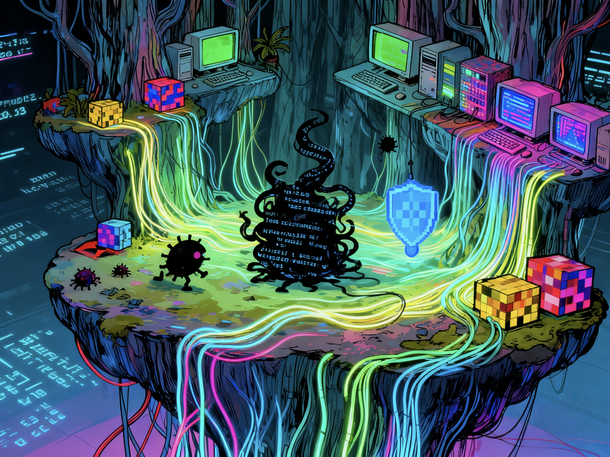
Узел зарождения Интернета (концептуализация)
- Механизм: Поток данных будет материализован в виде оскорбительных пиксельных блоков.
- Специальное: Победив "вирусного врага”, вы можете получить временный брандмауэр (щит).
- Концепция: абстрактный цифровой ландшафт, плавающий код и лес оптических кабелей.
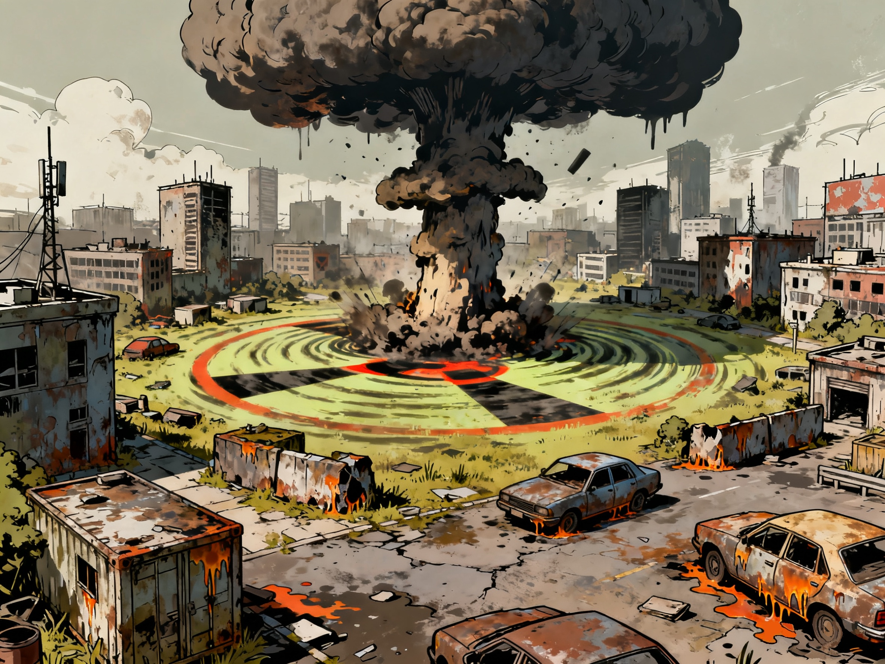
Ядерный взрыв мгновенно замораживает город
- Механизм: В центре карты наблюдается непрерывная рябь энергетического излучения.
- Специальные: использование бункеров, таких как автомобили, может блокировать радиацию, но она будет постепенно таять.
- Видение: город накрыт тенью грибовидного облака, все объекты застыли в ударной волне взрыва.
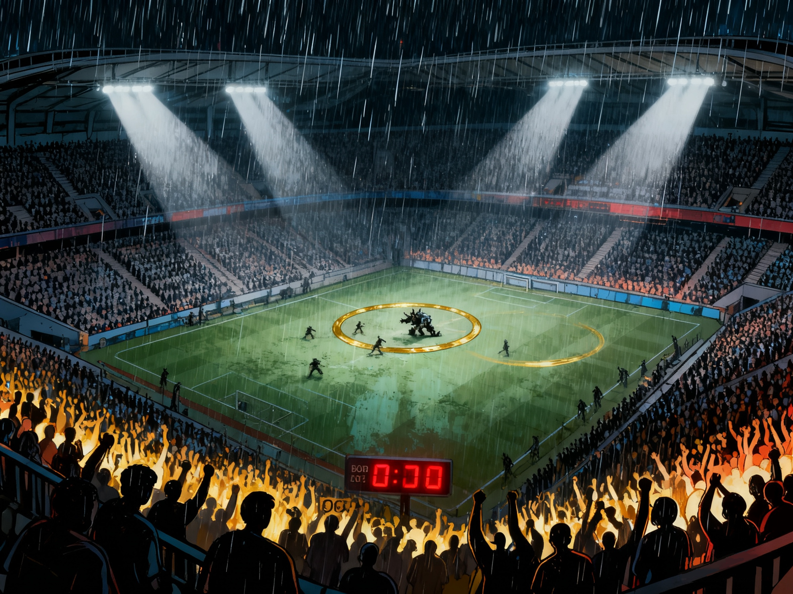
Время на стадионе по круговой системе
- Механизм: каждые 2 минуты сбрасываются позиции всех врагов (кроме БОССА).
- Специальное предложение: Зрительный зал увеличит количество аплодисментов в зависимости от количества комбинаций игрока.
- Видение: Гигантский стадион во время сильного ливня, огни освещают капли дождя, как будто время застывает.
Группа С: Фрагменты будущего/аномального времени
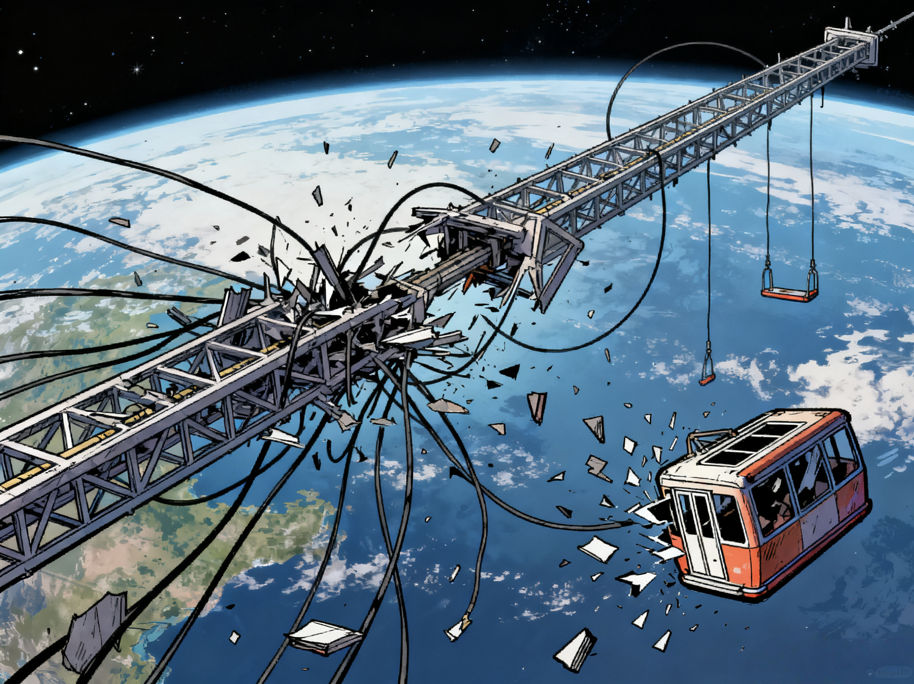
Место крушения космического лифта
- Механизм: Направление силы тяжести меняется случайным образом каждые 30 секунд.
- Специальные: оборванные тросы можно использовать в качестве поворотных инструментов для перемещения.
- Видение: Если смотреть вниз на землю, находящуюся на синхронной орбите, то сломанная кабина лифта подвешена.
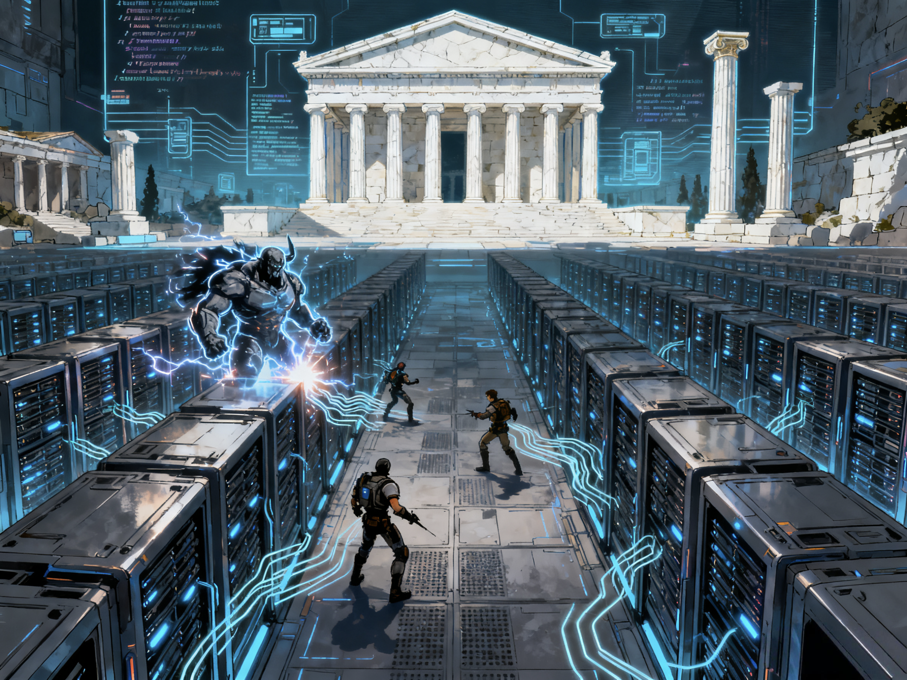
Зал с ядром искусственного интеллекта
- Механизм: БОСС предварительно прочитает вводимые игроком данные (требуется изменяемая тактика).
- Специальный: может взломать систему и временно отключить определенные защитные механизмы.
- Видение: Бесконечно расширенный серверный массив, голографическая проекция греческого храма.
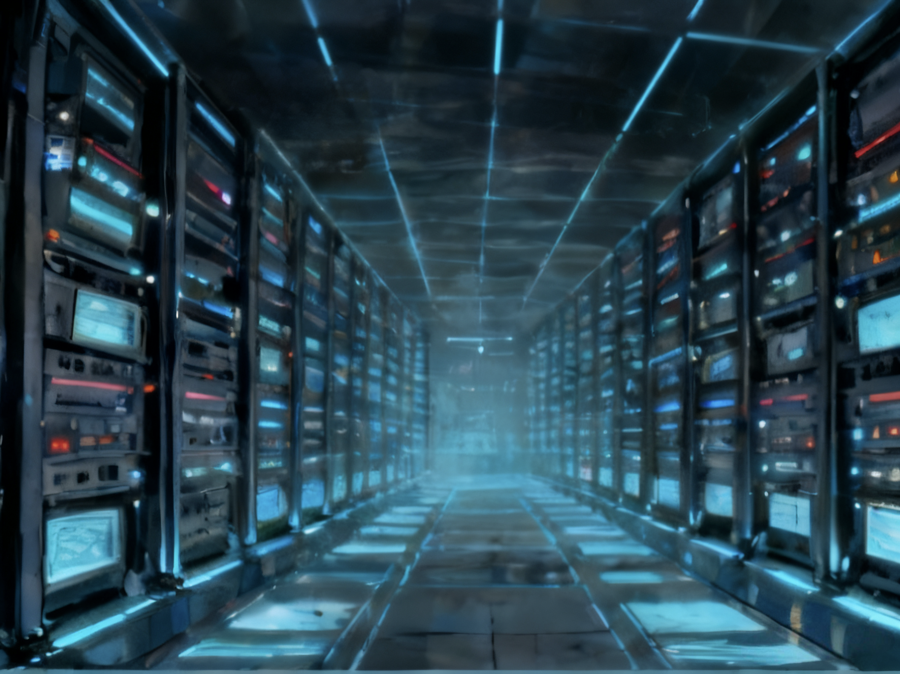
Зона разрушения защитной оболочки временного потока
- Механизм: соединение нескольких областей с разной скоростью течения времени.
- Специальный: быстрое прохождение через зоны с различным расходом воды для накопления “временной потенциальной энергии”.
- Видение: Сюрреалистический пейзаж-коллаж (динозавры и космические корабли сосуществуют).
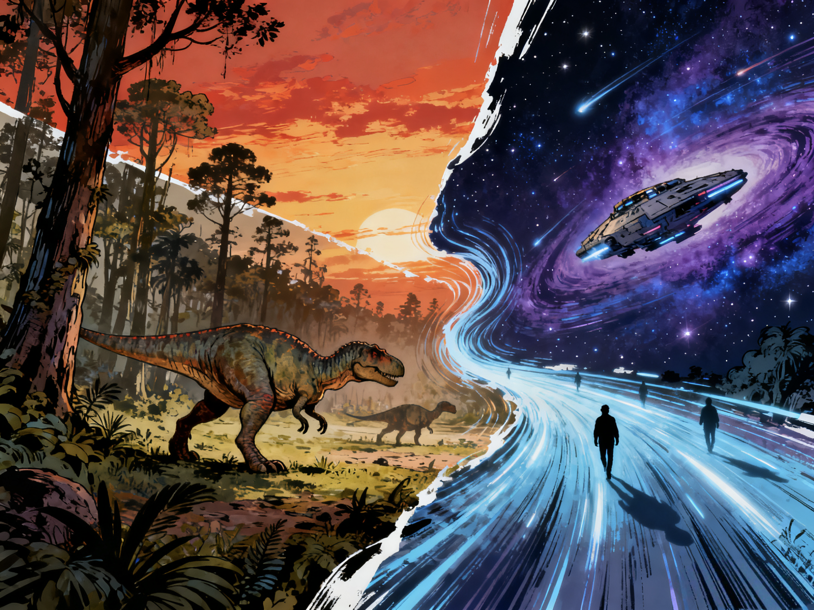
Край горизонта событий сингулярности
- Механизм: край карты будет продолжать притягивать игрока к центру.
- Специальное: Использование гравитационной рогатки позволяет перемещаться на сверхдальние расстояния.
- Зрение: искаженный свет, фон представляет собой вращающийся аккреционный диск.

Рынок пересечений Мультивселенной
- Механизм: NPC-продавцы появляются случайным образом, и товары каждый раз разные.
- Специальное: Может красть временные способности путешественников в других измерениях.
- Концепция: Плавучие киоски, торгующие различными товарами во времени и пространстве, с различными формами обслуживания клиентов.
Группа D: Карты специальных механизмов
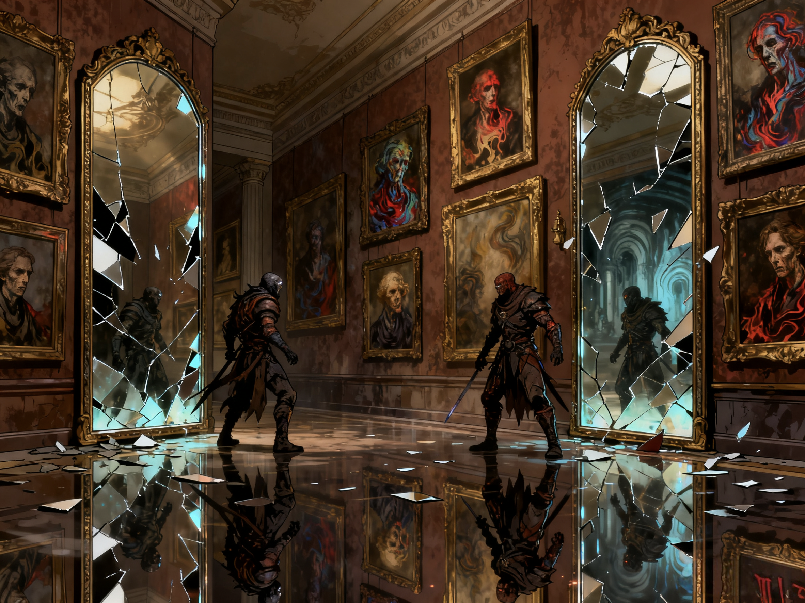
Художественный музей зеркального лабиринта
- Механизм: реальные и зеркальные враги существуют одновременно, и атаки необходимо идентифицировать.
- Специальное: разбейте определенное зеркало, чтобы попасть в скрытое измерение.
- Видение: Классическая галерея увешана искаженными портретами времени и пространства.
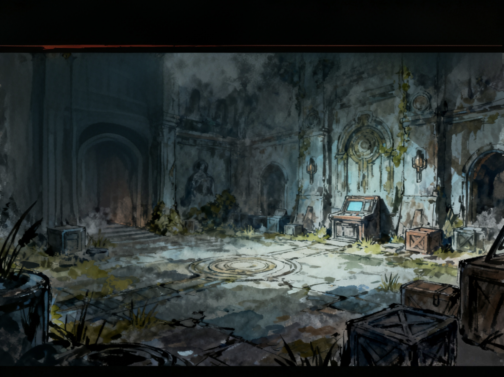
Обитель памяти (психологический уровень)
- Механизм: Враги генерируются по собственным данным игрока (имитируя ваши комбо).
- Специальное: Вы можете получить двойную энергию, столкнувшись со “своим собственным призраком”.
- Видение: туманная сцена, которая постоянно меняется, а ключевые предметы взяты из истории игрока.
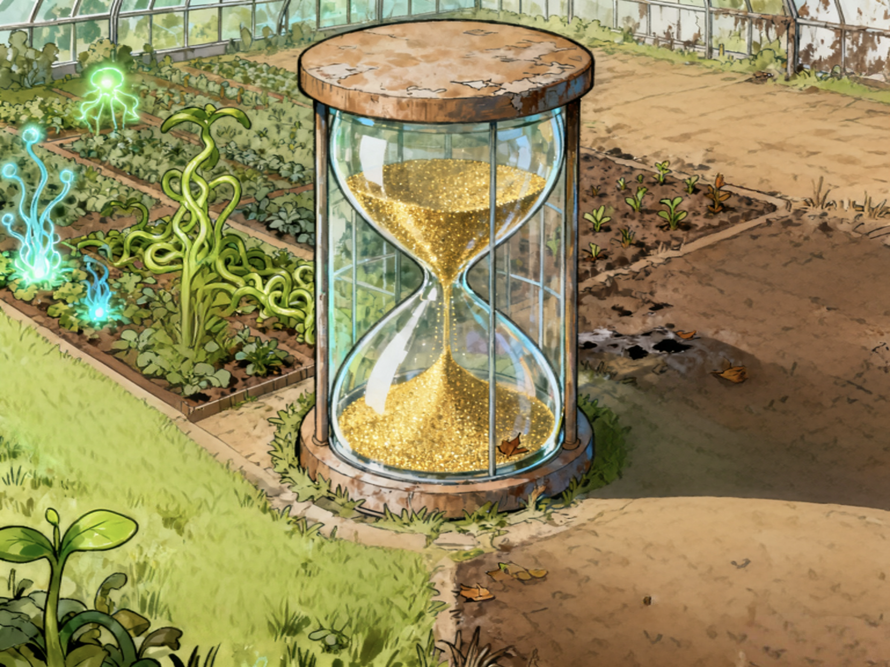
Ферма времени (рост и упадок)
- Механизм: со временем враг будет “расти” (становиться сильнее) или “распадаться” (становиться слабее).
- Специальное: может собирать незрелых врагов, чтобы получить редкие ресурсы.
- Видение: Огромная оранжерея в форме песочных часов, в которой выращиваются существа разных времен жизни.
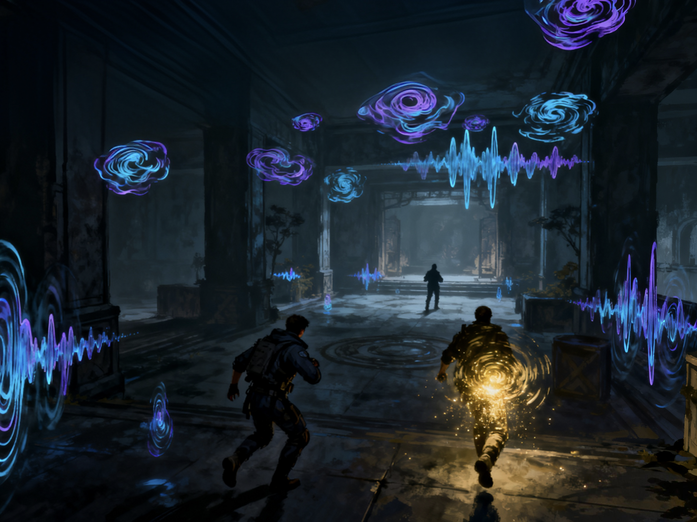
Звуковой зал (уровень тишины)
- Механизм: создание звуков (звуковые эффекты навыков, шаги) привлечет больше врагов.
- Специальное: за незаметные убийства вы получаете втрое больше энергии.
- Визуализация: Чрезвычайно тихая обстановка, все звуки визуализируются в виде ряби.
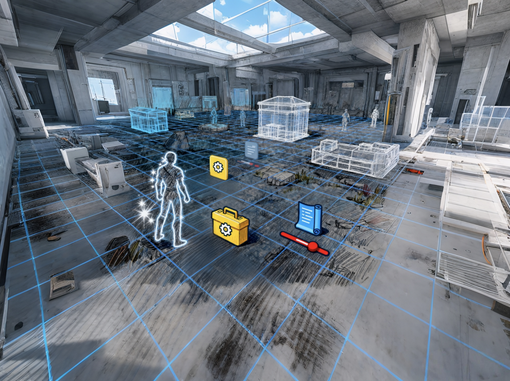
Область тестирования разработки (мета-уровень)
- Механизм: Правила меняются случайным образом каждый час (полная синхронизация сервисов).
- Специальное: Вы можете воспользоваться "Инструментами разработчика”, чтобы временно изменить параметры уровня.
- Визуализация: изображение полуфабриката, видимые линии сетки и отладочные модели.